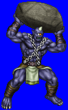
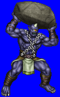
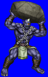
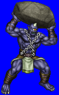

Height: About 4 meters Weight: About 1000 lbs.
Habitat: Mountains Origin: Greece
Meaning: "One eye"
The first giants of the Greek myth, part of a race that built Olympus for the gods. the cyclops at first was a one-eyed warrior wearing Athena's armor and used a bow. As time passed, the cyclops was portrayed as a giant that could toss Zeus's lightning bolts at will. Usually lives alone in the mountains living an ascetic lifestyle as humans fear its low intelligence and grotesque appearance.